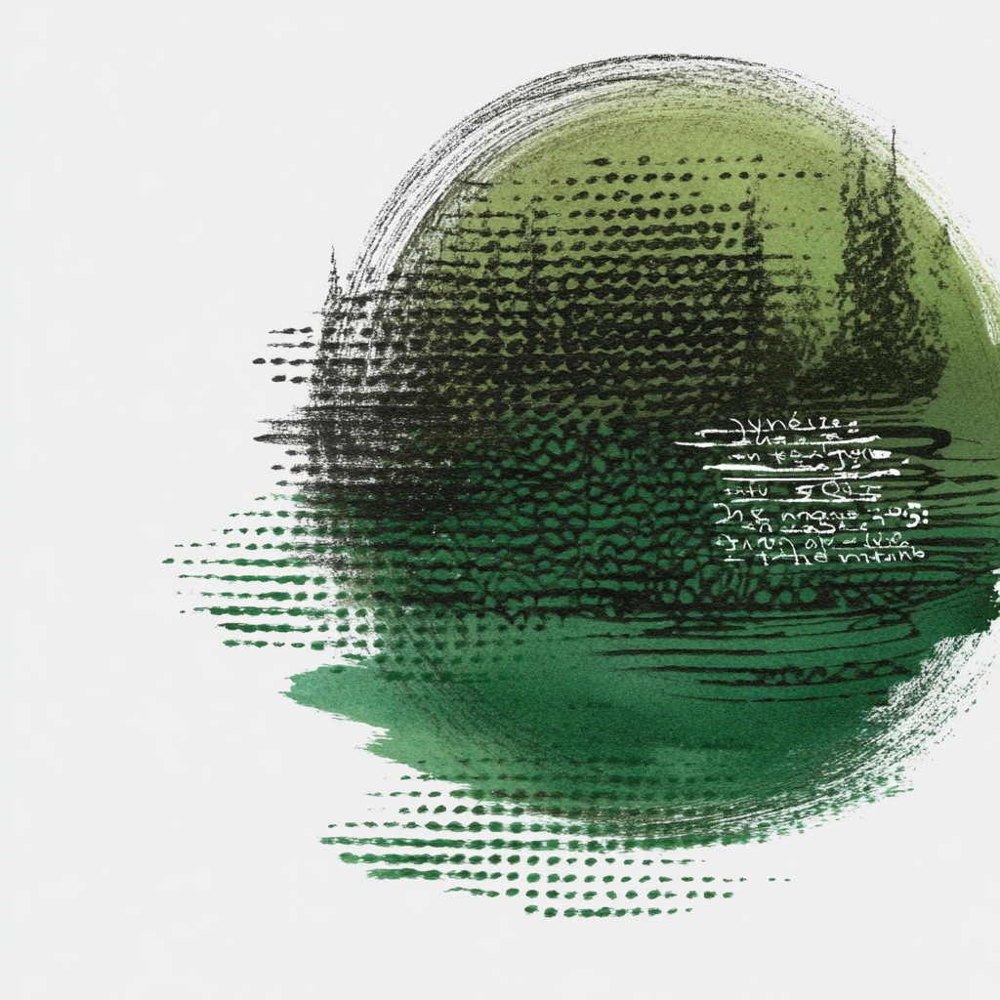
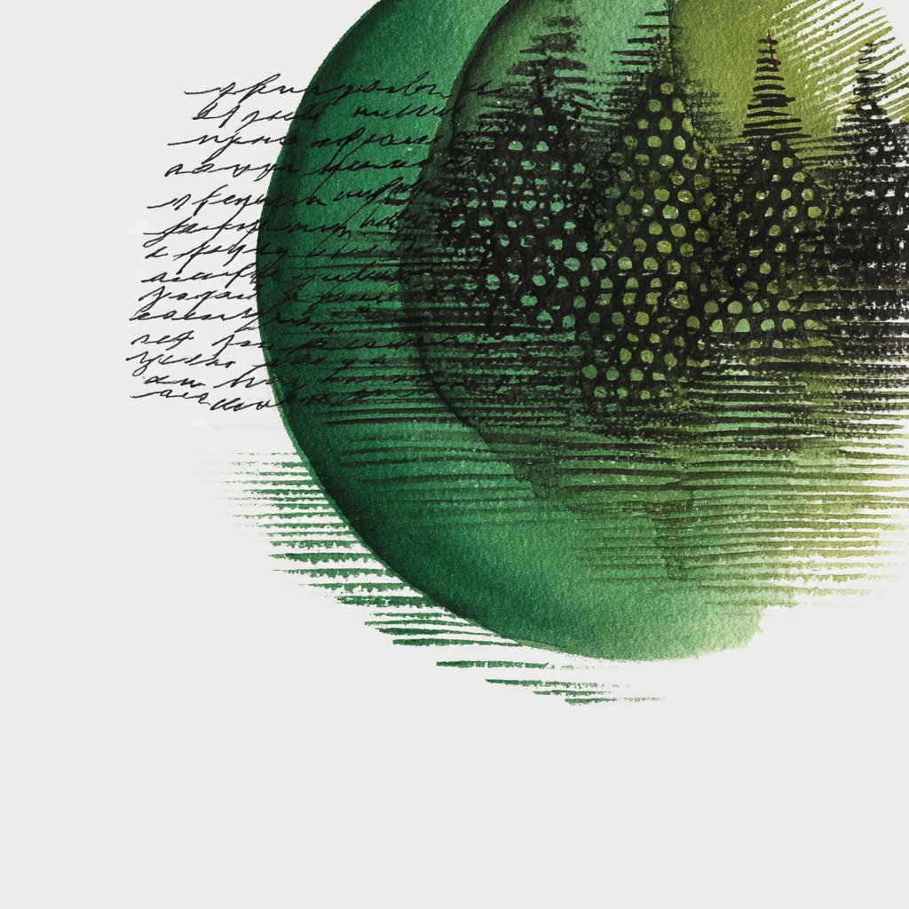

Accent imagery · painterly fragments


Enso circles, calligraphic gestures, halftone moons. Embedded in cards, section openers, dividers. Never tinted; never stretched.
mix-blend-mode: multiply
lets them sit on parchment without a white border.